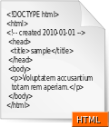

HTML
|  | |
| Filename extension |
|
|---|---|
| Internet media type | text/html |
| Type code | TEXT |
| Developed by | W3C & WHATWG |
| Initial release | 1993 |
| Latest release | |
| Type of format | Document file format |
| Extended from | SGML |
| Extended to | XHTML |
| Standard |
|
| Open format? | Yes |
| Website | |
{kind=link}
| HTML | |||
|---|---|---|---|
| Comparisons | |||
|
|||
HyperText Markup Language, commonly referred to as HTML, is the standard markup language used to create web pages. Along with CSS, and JavaScript, HTML is a cornerstone technology, used by most websites to create visually engaging webpages, user interfaces for web applications, and user interfaces for many mobile applications.[1] Web browsers can read HTML files and render them into visible or audible web pages. HTML describes the structure of a website semantically along with cues for presentation, making it a markup language, rather than a programming language.
HTML elements form the building blocks of all websites. HTML allows images and objects to be embedded and can be used to create interactive forms. It provides a means to create structured documents by denoting structural semantics for text such as headings, paragraphs, lists, links, quotes and other items.
The language is written in the form of HTML elements consisting of tags enclosed in angle brackets (like <html>). Browsers do not display the HTML tags and scripts, but use them to interpret the content of the page.
HTML can embed scripts written in languages such as JavaScript which affect the behavior of HTML web pages. Web browsers can also refer to Cascading Style Sheets (CSS) to define the look and layout of text and other material. The World Wide Web Consortium (W3C), maintainer of both the HTML and the CSS standards, has encouraged the use of CSS over explicit presentational HTML since 1997.[2]
Contents
[hide]History[edit]
{kind=link}
{kind=link}
Development[edit]
{kind=link}
In 1980, physicist Tim Berners-Lee, then a contractor at CERN, proposed and prototyped ENQUIRE, a system for CERN researchers to use and share documents. In 1989, Berners-Lee wrote a memo proposing an Internet-based hypertext system.[3] Berners-Lee specified HTML and wrote the browser and server software in late 1990. That year, Berners-Lee and CERN data systems engineer Robert Cailliau collaborated on a joint request for funding, but the project was not formally adopted by CERN. In his personal notes[4] from 1990 he listed[5] "some of the many areas in which hypertext is used" and put an encyclopedia first.
The first publicly available description of HTML was a document called "HTML Tags", first mentioned on the Internet by Tim Berners-Lee in late 1991.[6][7] It describes 18 elements comprising the initial, relatively simple design of HTML. Except for the hyperlink tag, these were strongly influenced by SGMLguid, an in-house Standard Generalized Markup Language (SGML)-based documentation format at CERN. Eleven of these elements still exist in HTML 4.[8]
HTML is a markup language that web browsers use to interpret and compose text, images and other material into visual or audible web pages. Default characteristics for every item of HTML markup are defined in the browser, and these characteristics can be altered or enhanced by the web page designer's additional use of CSS. Many of the text elements are found in the 1988 ISO technical report TR 9537 Techniques for using SGML, which in turn covers the features of early text formatting languages such as that used by the RUNOFF command developed in the early 1960s for the CTSS (Compatible Time-Sharing System) operating system: these formatting commands were derived from the commands used by typesetters to manually format documents. However, the SGML concept of generalized markup is based on elements (nested annotated ranges with attributes) rather than merely print effects, with also the separation of structure and markup; HTML has been progressively moved in this direction with CSS.
Berners-Lee considered HTML to be an application of SGML. It was formally defined as such by the Internet Engineering Task Force (IETF) with the mid-1993 publication of the first proposal for an HTML specification: "Hypertext Markup Language (HTML)" Internet-Draft by Berners-Lee and Dan Connolly, which included an SGML Document Type Definition to define the grammar.[9] The draft expired after six months, but was notable for its acknowledgment of the NCSA Mosaic browser's custom tag for embedding in-line images, reflecting the IETF's philosophy of basing standards on successful prototypes.[10] Similarly, Dave Raggett's competing Internet-Draft, "HTML+ (Hypertext Markup Format)", from late 1993, suggested standardizing already-implemented features like tables and fill-out forms.[11]
After the HTML and HTML+ drafts expired in early 1994, the IETF created an HTML Working Group, which in 1995 completed "HTML 2.0", the first HTML specification intended to be treated as a standard against which future implementations should be based.[12]
Further development under the auspices of the IETF was stalled by competing interests. Since 1996, the HTML specifications have been maintained, with input from commercial software vendors, by the World Wide Web Consortium (W3C).[13] However, in 2000, HTML also became an international standard (ISO/IEC 15445:2000). HTML 4.01 was published in late 1999, with further errata published through 2001. In 2004 development began on HTML5 in the Web Hypertext Application Technology Working Group (WHATWG), which became a joint deliverable with the W3C in 2008, and completed and standardized on 28 October 2014. [14]
HTML versions timeline[edit]
- November 24, 1995
- HTML 2.0 was published as IETF RFC 1866. Supplemental RFCs added capabilities:
- November 25, 1995: RFC 1867 (form-based file upload)
- May 1996: RFC 1942 (tables)
- August 1996: RFC 1980 (client-side image maps)
- January 1997: RFC 2070 (internationalization)
- January 14, 1997
- HTML 3.2[15] was published as a W3C Recommendation. It was the first version developed and standardized exclusively by the W3C, as the IETF had closed its HTML Working Group in September 12, 1996.[16]
- Initially code-named "Wilbur",[17] HTML 3.2 dropped math formulas entirely, reconciled overlap among various proprietary extensions and adopted most of Netscape's visual markup tags. Netscape's blink element and Microsoft's marquee element were omitted due to a mutual agreement between the two companies.[13] A markup for mathematical formulas similar to that in HTML was not standardized until 14 months later in MathML.
- December 18, 1997
- HTML 4.0[18] was published as a W3C Recommendation . It offers three variations:
- Strict, in which deprecated elements are forbidden,
- Transitional, in which deprecated elements are allowed,
- Frameset, in which mostly only frame related elements are allowed.
- Initially code-named "Cougar",[17] HTML 4.0 adopted many browser-specific element types and attributes, but at the same time sought to phase out Netscape's visual markup features by marking them as deprecated in favor of style sheets. HTML 4 is an SGML application conforming to ISO 8879 – SGML.[19]
- April 24, 1998
- HTML 4.0[20] was reissued with minor edits without incrementing the version number.
- December 24, 1999
- HTML 4.01[21] was published as a W3C Recommendation. It offers the same three variations as HTML 4.0 and its last errata were published May 12, 2001.
- May 2000
- ISO/IEC 15445:2000[22][23] ("ISO HTML", based on HTML 4.01 Strict) was published as an ISO/IEC international standard. In the ISO this standard falls in the domain of the ISO/IEC JTC1/SC34 (ISO/IEC Joint Technical Committee 1, Subcommittee 34 – Document description and processing languages).[22]
- As of mid-2008, HTML 4.01 and ISO/IEC 15445:2000 were the most recent versions of HTML. Development of the parallel, XML-based language XHTML occupied the W3C's HTML Working Group through the early and mid-2000s.
- October 28, 2014
- HTML5[24] was published as a W3C Recommendation.[25]
HTML draft version timeline[edit]
{kind=link}
- October 1991
- HTML Tags,[6] an informal CERN document listing 18 HTML tags, was first mentioned in public.
- June 1992
- First informal draft of the HTML DTD,[26] with seven[27][28][29] subsequent revisions (July 15, August 6, August 18, November 17, November 19, November 20, November 22)
- November 1992
- HTML DTD 1.1 (the first with a version number, based on RCS revisions, which start with 1.1 rather than 1.0), an informal draft[29]
- June 1993
- Hypertext Markup Language[30] was published by the IETF IIIR Working Group as an Internet-Draft (a rough proposal for a standard). It was replaced by a second version[31] one month later, followed by six further drafts published by IETF itself[32] that finally led to HTML 2.0 in RFC1866
- November 1993
- HTML+ was published by the IETF as an Internet-Draft and was a competing proposal to the Hypertext Markup Language draft. It expired in May 1994.
- April 1995 (authored March 1995)
- HTML 3.0[33] was proposed as a standard to the IETF, but the proposal expired five months later (28 September 1995)[34] without further action. It included many of the capabilities that were in Raggett's HTML+ proposal, such as support for tables, text flow around figures and the display of complex mathematical formulas.[34]
- W3C began development of its own Arena browser as a test bed for HTML 3 and Cascading Style Sheets,[35][36][37] but HTML 3.0 did not succeed for several reasons. The draft was considered very large at 150 pages and the pace of browser development, as well as the number of interested parties, had outstripped the resources of the IETF.[13] Browser vendors, including Microsoft and Netscape at the time, chose to implement different subsets of HTML 3's draft features as well as to introduce their own extensions to it.[13] (See Browser wars) These included extensions to control stylistic aspects of documents, contrary to the "belief [of the academic engineering community] that such things as text color, background texture, font size and font face were definitely outside the scope of a language when their only intent was to specify how a document would be organized."[13] Dave Raggett, who has been a W3C Fellow for many years has commented for example, "To a certain extent, Microsoft built its business on the Web by extending HTML features."[13]
- January 2008
- HTML5 was published as a Working Draft (link) by the W3C.[38]
- Although its syntax closely resembles that of SGML, HTML5 has abandoned any attempt to be an SGML application and has explicitly defined its own "html" serialization, in addition to an alternative XML-based XHTML5 serialization.[39]
- 2011 HTML5 – Last Call
- On 14 February 2011, the W3C extended the charter of its HTML Working Group with clear milestones for HTML5. In May 2011, the working group advanced HTML5 to "Last Call", an invitation to communities inside and outside W3C to confirm the technical soundness of the specification. The W3C developed a comprehensive test suite to achieve broad interoperability for the full specification by 2014, which was the target date for recommendation.[40] In January 2011, the WHATWG renamed its "HTML5" living standard to "HTML". The W3C nevertheless continues its project to release HTML5.[41]
- 2012 HTML5 – Candidate Recommendation
- In July 2012, WHATWG and W3C decided on a degree of separation. W3C will continue the HTML5 specification work, focusing on a single definitive standard, which is considered as a "snapshot" by WHATWG. The WHATWG organization will continue its work with HTML5 as a "Living Standard". The concept of a living standard is that it is never complete and is always being updated and improved. New features can be added but functionality will not be removed.[42]
- In December 2012, W3C designated HTML5 as a Candidate Recommendation.[43] The criterion for advancement to W3C Recommendation is "two 100% complete and fully interoperable implementations".[44][45]
- 2014 HTML5 – Proposed Recommendation and Recommendation
- In September 2014, W3C moved HTML5 to Proposed Recommendation.[46]
- On 28 October 2014, HTML5 was released as a stable W3C Recommendation,[47] meaning the specification process is complete.[48]
XHTML versions[edit]
XHTML is a separate language that began as a reformulation of HTML 4.01 using XML 1.0. It is no longer being developed as a separate standard.
- XHTML 1.0,[49] published January 26, 2000, as a W3C Recommendation, later revised and republished August 1, 2002. It offers the same three variations as HTML 4.0 and 4.01, reformulated in XML, with minor restrictions.
- XHTML 1.1,[50] published May 31, 2001, as a W3C Recommendation. It is based on XHTML 1.0 Strict, but includes minor changes, can be customized, is reformulated using modules from Modularization of XHTML, which was published April 10, 2001, as a W3C Recommendation.
- XHTML 2.0 was a working draft, but work on it was abandoned in 2009 in favor of work on HTML5 and XHTML5.[51][52][53] XHTML 2.0 was incompatible with XHTML 1.x and, therefore, would be more accurately characterized as an XHTML-inspired new language than an update to XHTML 1.x.
- An XHTML syntax, known as "XHTML5.1", is being defined alongside HTML5 in the HTML5 draft.[54]
Markup[edit]
HTML markup consists of several key components, including those called tags (and their attributes), character-based data types, character references and entity references. HTML tags most commonly come in pairs like <h1> and </h1>, although some represent empty elements and so are unpaired, for example <img>. The first tag in such a pair is the start tag, and the second is the end tag (they are also called opening tags and closing tags).
Another important component of the HTMLdocument type declaration, which triggers standards mode rendering.
The following is an example of the classic Hello world program, a common test employed for comparing programming languages, scripting languages and markup languages. This example is made using 9 lines of code:
<!DOCTYPE html>
<html>
<head>
<title>This is a title</title>
</head>
<body>
<p>Hello world!</p>
</body>
</html>
(The text between <html> and </html> describes the web page, and the text between <body> and </body> is the visible page content. The markup text "<title>This is a title</title>" defines the browser page title.)
The Document Type Declaration <!DOCTYPE html> is for HTML5. If a declaration is not included, various browsers will revert to "quirks mode" for rendering.[55]
Elements[edit]
HTML documents imply a structure of nested HTML elements. These are indicated in the document by HTML tags, enclosed in angle brackets thus: <p> [56]
In the simple, general case, the extent of an element is indicated by a pair of tags: a "start tag" <p> and "end tag" </p>. The text content of the element, if any, is placed between these tags.
Tags may also enclose further tag markup between the start and end, including a mixture of tags and text. This indicates further (nested) elements, as children of the parent element.
The start tag may also include attributes within the tag.
These indicate other information, such as identifiers for sections
within the document, identifiers used to bind style information to the
presentation of the document, and for some tags such as the <img> used to embed images, the reference to the image resource.
Some elements, such as the line break <br>, do not permit any
embedded content, either text or further tags. These require only a
single empty tag (akin to a start tag) and do not use an end tag.
Many tags, particularly the closing end tag for the very commonly-used paragraph element <p>,
are optional. An HTML browser or other agent can infer the closure for
the end of an element from the context and the structural rules defined
by the HTML standard. These rules are complex and not widely understood
by most HTML coders.
The general form of an HTML element is therefore: <tag attribute1="value1" attribute2="value2">content</tag>. Some HTML elements are defined as empty elements and take the form <tag attribute1="value1" attribute2="value2">. Empty elements may enclose no content, for instance, the <br> tag or the inline <img>
tag. The name of an HTML element is the name used in the tags. Note
that the end tag's name is preceded by a slash character, "/", and that
in empty elements the end tag is neither required nor allowed. If
attributes are not mentioned, default values are used in each case.
Element examples[edit]
Header of the HTML document:<head>...</head>. The title is included in the head, for example:
<head>
<title>The Title</title>
</head>
Headings: HTML headings are defined with the <h1> to <h6> tags:
<h1>Heading level 1</h1>
<h2>Heading level 2</h2>
<h3>Heading level 3</h3>
<h4>Heading level 4</h4>
<h5>Heading level 5</h5>
<h6>Heading level 6</h6>
Paragraphs:
<p>Paragraph 1</p> <p>Paragraph 2</p>
Line breaks:<br>. The difference between <br> and <p> is that "br" breaks a line without altering the semantic structure of the page, whereas "p" sections the page into paragraphs. Note also that "br" is an empty element in that, although it may have attributes, it can take no content and it may not have an end tag.
<p>This <br> is a paragraph <br> with <br> line breaks</p>
This is a link in HTML. To create a link the <a> tag is used. The href= attribute holds the URL address of the link.
<a href="https://www.wikipedia.org/">A link to Wikipedia!</a>
Comments:
<!-- This is a comment -->
Comments can help in the understanding of the markup and do not display in the webpage.
There are several types of markup elements used in HTML:
- Structural markup indicates the purpose of text
- For example,
<h2>Golf</h2>establishes "Golf" as a second-level heading. Structural markup does not denote any specific rendering, but most web browsers have default styles for element formatting. Content may be further styled using Cascading Style Sheets (CSS).[57] - Presentational markup indicates the appearance of the text, regardless of its purpose
- For example,
<b>boldface</b>indicates that visual output devices should render "boldface" in bold text, but gives little indication what devices that are unable to do this (such as aural devices that read the text aloud) should do. In the case of both<b>bold</b>and<i>italic</i>, there are other elements that may have equivalent visual renderings but that are more semantic in nature, such as<strong>strong text</strong>and<em>emphasised text</em>respectively. It is easier to see how an aural user agent should interpret the latter two elements. However, they are not equivalent to their presentational counterparts: it would be undesirable for a screen-reader to emphasize the name of a book, for instance, but on a screen such a name would be italicized. Most presentational markup elements have become deprecated under the HTML 4.0 specification in favor of using CSS for styling. - Hypertext markup makes parts of a document into links to other documents
- An anchor element creates a hyperlink in the document and its
hrefattribute sets the link's target URL. For example, the HTML markup,<a href="http://www.google.com/">Wikipedia</a>, will render the word "Wikipedia" as a hyperlink. To render an image as a hyperlink, an "img" element is inserted as content into the "a" element. Like "br", "img" is an empty element with attributes but no content or closing tag.<a href="http://example.org">.<img src="image.gif" alt="descriptive text" width="50" height="50" border="0"></a>
Attributes[edit]
Most of the attributes of an element are name-value pairs,
separated by "=" and written within the start tag of an element after
the element's name. The value may be enclosed in single or double
quotes, although values consisting of certain characters can be left
unquoted in HTML (but not XHTML) .[58][59] Leaving attribute values unquoted is considered unsafe.[60]
In contrast with name-value pair attributes, there are some attributes
that affect the element simply by their presence in the start tag of the
element,[6] like the ismap attribute for the img element.[61]
There are several common attributes that may appear in many elements :
- The
idattribute provides a document-wide unique identifier for an element. This is used to identify the element so that stylesheets can alter its presentational properties, and scripts may alter, animate or delete its contents or presentation. Appended to the URL of the page, it provides a globally unique identifier for the element, typically a sub-section of the page. For example, the ID "Attributes" inhttp://en.wikipedia.org/wiki/HTML#Attributes - The
classattribute provides a way of classifying similar elements. This can be used for semantic or presentation purposes. For example, an HTML document might semantically use the designationclass="notation"to indicate that all elements with this class value are subordinate to the main text of the document. In presentation, such elements might be gathered together and presented as footnotes on a page instead of appearing in the place where they occur in the HTML source. Class attributes are used semantically in microformats. Multiple class values may be specified; for exampleclass="notation important"puts the element into both the "notation" and the "important" classes. - An author may use the
styleattribute to assign presentational properties to a particular element. It is considered better practice to use an element'sidorclassattributes to select the element from within a stylesheet, though sometimes this can be too cumbersome for a simple, specific, or ad hoc styling. - The
titleattribute is used to attach subtextual explanation to an element. In most browsers this attribute is displayed as a tooltip. - The
langattribute identifies the natural language of the element's contents, which may be different from that of the rest of the document. For example, in an English-language document:<p>Oh well, <span lang="fr">c'est la vie</span>, as they say in France.</p>
The abbreviation element, abbr, can be used to demonstrate some of these attributes :
<abbr id="anId" class="jargon" style="color:purple;" title="Hypertext Markup Language">HTML</abbr>
This example displays as HTML; in most browsers, pointing the cursor at the abbreviation should display the title text "Hypertext Markup Language."
Most elements take the language-related attribute dir to specify text direction, such as with "rtl" for right-to-left text in, for example, Arabic, Persian or Hebrew.[62]
Character and entity references[edit]
As of version 4.0, HTML defines a set of 252 character entity references and a set of 1,114,050 numeric character references, both of which allow individual characters to be written via simple markup, rather than literally. A literal character and its markup counterpart are considered equivalent and are rendered identically.
The ability to "escape" characters in this way allows for the characters < and & (when written as < and &, respectively) to be interpreted as character data, rather than markup. For example, a literal < normally indicates the start of a tag, and & normally indicates the start of a character entity reference or numeric character reference; writing it as & or & or & allows & to be included in the content of an element or in the value of an attribute. The double-quote character ("), when not used to quote an attribute value, must also be escaped as " or " or " when it appears within the attribute value itself. Equivalently, the single-quote character ('), when not used to quote an attribute value, must also be escaped as ' or ' (or as ' in HTML5 or XHTML documents [63][64])
when it appears within the attribute value itself. If document authors
overlook the need to escape such characters, some browsers can be very
forgiving and try to use context to guess their intent. The result is
still invalid markup, which makes the document less accessible to other
browsers and to other user agents that may try to parse the document for search and indexing purposes for example.
Escaping also allows for characters that are not easily typed, or that are not available in the document's character encoding, to be represented within element and attribute content. For example, the acute-accented e (é),
a character typically found only on Western European and South American
keyboards, can be written in any HTML document as the entity reference é or as the numeric references é or é, using characters that are available on all keyboards and are supported in all character encodings. Unicode character encodings such as UTF-8 are compatible with all modern browsers and allow direct access to almost all the characters of the world's writing systems.[65]
Data types[edit]
HTML defines several data types for element content, such as script data and stylesheet data, and a plethora of types for attribute values, including IDs, names, URIs, numbers, units of length, languages, media descriptors, colors, character encodings, dates and times, and so on. All of these data types are specializations of character data.
Document type declaration[edit]
HTML documents are required to start with a Document Type Declaration (informally, a "doctype"). In browsers, the doctype helps to define the rendering mode—particularly whether to use quirks mode.
The original purpose of the doctype was to enable parsing and validation of HTML documents by SGML tools based on the Document Type Definition (DTD). The DTD to which the DOCTYPE refers contains a machine-readable grammar specifying the permitted and prohibited content for a document conforming to such a DTD. Browsers, on the other hand, do not implement HTML as an application of SGML and by consequence do not read the DTD.
HTML5 does not define a DTD; therefore, in HTML5 the doctype declaration is simpler and shorter:[66]
<!DOCTYPE html>
An example of an HTML 4 doctype
<!DOCTYPE HTML PUBLIC "-//W3C//DTD HTML 4.01//EN" "http://www.w3.org/TR/html4/strict.dtd">
This declaration references the DTD for the "strict" version of HTML 4.01. SGML-based validators read the DTD in order to properly parse the document and to perform validation. In modern browsers, a valid doctype activates standards mode as opposed to quirks mode.
In addition, HTML 4.01 provides Transitional and Frameset DTDs, as explained below. Transitional type is the most inclusive, incorporating current tags as well as older or "deprecated" tags, with the Strict DTD excluding deprecated tags. Frameset has all tags necessary to make frames on a page along with the tags included in transitional type[67]
Semantic HTML[edit]
Semantic HTML is a way of writing HTML that emphasizes the meaning of
the encoded information over its presentation (look). HTML has included
semantic markup from its inception,[68] but has also included presentational markup, such as <font>, <i> and <center> tags. There are also the semantically neutral span and div tags. Since the late 1990s when Cascading Style Sheets
were beginning to work in most browsers, web authors have been
encouraged to avoid the use of presentational HTML markup with a view to
the separation of presentation and content.[69]
In a 2001 discussion of the Semantic Web, Tim Berners-Lee and others gave examples of ways in which intelligent software "agents" may one day automatically crawl the web and find, filter and correlate previously unrelated, published facts for the benefit of human users.[70] Such agents are not commonplace even now, but some of the ideas of Web 2.0, mashups and price comparison websites may be coming close. The main difference between these web application hybrids and Berners-Lee's semantic agents lies in the fact that the current aggregation and hybridization of information is usually designed in by web developers, who already know the web locations and the API semantics of the specific data they wish to mash, compare and combine.
An important type of web agent that does crawl and read web pages automatically, without prior knowledge of what it might find, is the web crawler or search-engine spider. These software agents are dependent on the semantic clarity of web pages they find as they use various techniques and algorithms to read and index millions of web pages a day and provide web users with search facilities without which the World Wide Web's usefulness would be greatly reduced.
In order for search-engine spiders to be able to rate the significance of pieces of text they find in HTML documents, and also for those creating mashups and other hybrids as well as for more automated agents as they are developed, the semantic structures that exist in HTML need to be widely and uniformly applied to bring out the meaning of published text.[71]
Presentational markup tags are deprecated in current HTML and XHTML recommendations and are illegal in HTML5.
Good semantic HTML also improves the accessibility of web documents (see also Web Content Accessibility Guidelines). For example, when a screen reader or audio browser can correctly ascertain the structure of a document, it will not waste the visually impaired user's time by reading out repeated or irrelevant information when it has been marked up correctly.
Delivery[edit]
HTML documents can be delivered by the same means as any other computer file. However, they are most often delivered either by HTTP from a web server or by email.
HTTP[edit]
The World Wide Web is composed primarily of HTML documents transmitted from web servers to web browsers using the Hypertext Transfer Protocol (HTTP). However, HTTP is used to serve images, sound, and other content, in addition to HTML. To allow the web browser to know how to handle each document it receives, other information is transmitted along with the document. This meta data usually includes the MIME type (e.g. text/html or application/xhtml+xml) and the character encoding (see Character encoding in HTML).
In modern browsers, the MIME type that is sent with the HTML document may affect how the document is initially interpreted. A document sent with the XHTML MIME type is expected to be well-formed XML; syntax errors may cause the browser to fail to render it. The same document sent with the HTML MIME type might be displayed successfully, since some browsers are more lenient with HTML.
The W3C recommendations state that XHTML 1.0 documents that follow guidelines set forth in the recommendation's Appendix C may be labeled with either MIME Type.[72] XHTML 1.1 also states that XHTML 1.1 documents should[73] be labeled with either MIME type.[74]
HTML e-mail[edit]
Most graphical email clients allow the use of a subset of HTML (often ill-defined) to provide formatting and semantic markup not available with plain text. This may include typographic information like coloured headings, emphasized and quoted text, inline images and diagrams. Many such clients include both a GUI editor for composing HTML e-mail messages and a rendering engine for displaying them. Use of HTML in e-mail is criticized by some because of compatibility issues, because it can help disguise phishing attacks, because of accessibility issues for blind or visually impaired people, because it can confuse spam filters and because the message size is larger than plain text.
Naming conventions[edit]
The most common filename extension for files containing HTML is .html. A common abbreviation of this is .htm, which originated because some early operating systems and file systems, such as DOS and the limitations imposed by FAT data structure, limited file extensions to three letters.[75]
HTML Application[edit]
An HTML Application (HTA; file extension ".hta") is a Microsoft Windows application that uses HTML and Dynamic HTML in a browser to provide the application's graphical interface. A regular HTML file is confined to the security model of the web browser's security, communicating only to web servers and manipulating only webpage objects and site cookies. An HTA runs as a fully trusted application and therefore has more privileges, like creation/editing/removal of files and Windows Registry entries. Because they operate outside the browser's security model, HTAs cannot be executed via HTTP, but must be downloaded (just like an EXE file) and executed from local file system.
HTML4 variations[edit]
HTML is precisely what we were trying to PREVENT— ever-breaking links, links going outward only, quotes you can't follow to their origins, no version management, no rights management.
Since its inception, HTML and its associated protocols gained acceptance relatively quickly. However, no clear standards existed in the early years of the language. Though its creators originally conceived of HTML as a semantic language devoid of presentation details,[77] practical uses pushed many presentational elements and attributes into the language, driven largely by the various browser vendors. The latest standards surrounding HTML reflect efforts to overcome the sometimes chaotic development of the language[78] and to create a rational foundation for building both meaningful and well-presented documents. To return HTML to its role as a semantic language, the W3C has developed style languages such as CSS and XSL to shoulder the burden of presentation. In conjunction, the HTML specification has slowly reined in the presentational elements.
There are two axes differentiating various variations of HTML as currently specified: SGML-based HTML versus XML-based HTML (referred to as XHTML) on one axis, and strict versus transitional (loose) versus frameset on the other axis.
SGML-based versus XML-based HTML[edit]
One difference in the latest HTML specifications lies in the distinction between the SGML-based specification and the XML-based specification. The XML-based specification is usually called XHTML to distinguish it clearly from the more traditional definition. However, the root element name continues to be "html" even in the XHTML-specified HTML. The W3C intended XHTML 1.0 to be identical to HTML 4.01 except where limitations of XML over the more complex SGML require workarounds. Because XHTML and HTML are closely related, they are sometimes documented in parallel. In such circumstances, some authors conflate the two names as (X)HTML or X(HTML).
Like HTML 4.01, XHTML 1.0 has three sub-specifications: strict, transitional and frameset.
Aside from the different opening declarations for a document, the
differences between an HTML 4.01 and XHTML 1.0 document—in each of the
corresponding DTDs—are largely syntactic. The underlying syntax of HTML
allows many shortcuts that XHTML does not, such as elements with
optional opening or closing tags, and even empty elements which must not
have an end tag. By contrast, XHTML requires all elements to have an
opening tag and a closing tag. XHTML, however, also introduces a new
shortcut: an XHTML tag may be opened and closed within the same tag, by
including a slash before the end of the tag like this: <br/>.
The introduction of this shorthand, which is not used in the SGML
declaration for HTML 4.01, may confuse earlier software unfamiliar with
this new convention. A fix for this is to include a space before closing
the tag, as such: <br />.[79]
To understand the subtle differences between HTML and XHTML, consider the transformation of a valid and well-formed XHTML 1.0 document that adheres to Appendix C (see below) into a valid HTML 4.01 document. To make this translation requires the following steps:
- The language for an element should be specified with a
langattribute rather than the XHTMLxml:langattribute. XHTML uses XML's built in language-defining functionality attribute. - Remove the XML namespace (
xmlns=URI). HTML has no facilities for namespaces. - Change the document type declaration from XHTML 1.0 to HTML 4.01. (see DTD section for further explanation).
- If present, remove the XML declaration. (Typically this is:
<?xml version="1.0" encoding="utf-8"?>). - Ensure that the document's MIME type is set to
text/html. For both HTML and XHTML, this comes from the HTTPContent-Typeheader sent by the server. - Change the XML empty-element syntax to an HTML style empty element (
<br/>to<br>).
Those are the main changes necessary to translate a document from XHTML 1.0 to HTML 4.01. To translate from HTML to XHTML would also require the addition of any omitted opening or closing tags. Whether coding in HTML or XHTML it may just be best to always include the optional tags within an HTML document rather than remembering which tags can be omitted.
A well-formed XHTML document adheres to all the syntax requirements of XML. A valid document adheres to the content specification for XHTML, which describes the document structure.
The W3C recommends several conventions to ensure an easy migration between HTML and XHTML (see HTML Compatibility Guidelines). The following steps can be applied to XHTML 1.0 documents only:
- Include both
xml:langandlangattributes on any elements assigning language. - Use the empty-element syntax only for elements specified as empty in HTML.
- Include an extra space in empty-element tags: for example
<br />instead of<br/>. - Include explicit close tags for elements that permit content but are left empty (for example,
<div></div>, not<div />). - Omit the XML declaration.
By carefully following the W3C's compatibility guidelines, a user
agent should be able to interpret the document equally as HTML or XHTML.
For documents that are XHTML 1.0 and have been made compatible in this
way, the W3C permits them to be served either as HTML (with a text/html MIME type), or as XHTML (with an application/xhtml+xml or application/xml
MIME type). When delivered as XHTML, browsers should use an XML parser,
which adheres strictly to the XML specifications for parsing the
document's contents.
Transitional versus strict[edit]
HTML 4 defined three different versions of the language: Strict, Transitional (once called Loose) and Frameset. The Strict version is intended for new documents and is considered best practice, while the Transitional and Frameset versions were developed to make it easier to transition documents that conformed to older HTML specification or didn't conform to any specification to a version of HTML 4. The Transitional and Frameset versions allow for presentational markup, which is omitted in the Strict version. Instead, cascading style sheets are encouraged to improve the presentation of HTML documents. Because XHTML 1 only defines an XML syntax for the language defined by HTML 4, the same differences apply to XHTML 1 as well.
The Transitional version allows the following parts of the vocabulary, which are not included in the Strict version:
- A looser content model
- Inline elements and plain text are allowed directly in:
body,blockquote,form,noscriptandnoframes
- Inline elements and plain text are allowed directly in:
- Presentation related elements
- underline (
u)(Deprecated. can confuse a visitor with a hyperlink.) - strike-through (
s) center(Deprecated. use CSS instead.)font(Deprecated. use CSS instead.)basefont(Deprecated. use CSS instead.)
- underline (
- Presentation related attributes
background(Deprecated. use CSS instead.) andbgcolor(Deprecated. use CSS instead.) attributes forbody(required element according to the W3C.) element.align(Deprecated. use CSS instead.) attribute ondiv,form, paragraph (p) and heading (h1...h6) elementsalign(Deprecated. use CSS instead.),noshade(Deprecated. use CSS instead.),size(Deprecated. use CSS instead.) andwidth(Deprecated. use CSS instead.) attributes onhrelementalign(Deprecated. use CSS instead.),border,vspaceandhspaceattributes onimgandobject(caution: theobjectelement is only supported in Internet Explorer (from the major browsers)) elementsalign(Deprecated. use CSS instead.) attribute onlegendandcaptionelementsalign(Deprecated. use CSS instead.) andbgcolor(Deprecated. use CSS instead.) ontableelementnowrap(Obsolete),bgcolor(Deprecated. use CSS instead.),width,heightontdandthelementsbgcolor(Deprecated. use CSS instead.) attribute ontrelementclear(Obsolete) attribute onbrelementcompactattribute ondl,dirandmenuelementstype(Deprecated. use CSS instead.),compact(Deprecated. use CSS instead.) andstart(Deprecated. use CSS instead.) attributes onolandulelementstypeandvalueattributes onlielementwidthattribute onpreelement
- Additional elements in Transitional specification
menu(Deprecated. use CSS instead.) list (no substitute, though unordered list is recommended)dir(Deprecated. use CSS instead.) list (no substitute, though unordered list is recommended)isindex(Deprecated.) (element requires server-side support and is typically added to documents server-side,formandinputelements can be used as a substitute)applet(Deprecated. use theobjectelement instead.)
- The
language(Obsolete) attribute on script element (redundant with thetypeattribute). - Frame related entities
iframenoframestarget(Deprecated in themap,linkandformelements.) attribute ona, client-side image-map (map),link,formandbaseelements
The Frameset version includes everything in the Transitional version, as well as the frameset element (used instead of body) and the frame element.
Frameset versus transitional[edit]
In addition to the above transitional differences, the frameset
specifications (whether XHTML 1.0 or HTML 4.01) specify a different
content model, with frameset replacing body, that contains either frame elements, or optionally noframes with a body.
Summary of specification versions[edit]
As this list demonstrates, the loose versions of the specification are maintained for legacy support. However, contrary to popular misconceptions, the move to XHTML does not imply a removal of this legacy support. Rather the X in XML stands for extensible and the W3C is modularizing the entire specification and opening it up to independent extensions. The primary achievement in the move from XHTML 1.0 to XHTML 1.1 is the modularization of the entire specification. The strict version of HTML is deployed in XHTML 1.1 through a set of modular extensions to the base XHTML 1.1 specification. Likewise, someone looking for the loose (transitional) or frameset specifications will find similar extended XHTML 1.1 support (much of it is contained in the legacy or frame modules). The modularization also allows for separate features to develop on their own timetable. So for example, XHTML 1.1 will allow quicker migration to emerging XML standards such as MathML (a presentational and semantic math language based on XML) and XForms—a new highly advanced web-form technology to replace the existing HTML forms.
In summary, the HTML 4 specification primarily reined in all the various HTML implementations into a single clearly written specification based on SGML. XHTML 1.0, ported this specification, as is, to the new XML defined specification. Next, XHTML 1.1 takes advantage of the extensible nature of XML and modularizes the whole specification. XHTML 2.0 was intended to be the first step in adding new features to the specification in a standards-body-based approach.
HTML5 variations[edit]
WhatWG HTML versus HTML5[edit]
The WhatWG considers their work as living standard HTML for what constitutes the state of the art in major browser implementations by Apple (Safari), Google (Chrome), Mozilla (Firefox), Opera (Opera), and others. HTML5 is specified by the HTML Working Group of the W3C following the W3C process. As of 2013[update] both specifications are similar and mostly derived from each other, i.e., the work on HTML5 started with an older WhatWG draft, and later the WhatWG living standard was based on HTML5 drafts in 2011.[80][81]
Hypertext features not in HTML[edit]
HTML lacks some of the features found in earlier hypertext systems, such as source tracking, fat links and others.[82] Even some hypertext features that were in early versions of HTML have been ignored by most popular web browsers until recently[when?], such as the link element and in-browser Web page editing.
Sometimes Web services or browser manufacturers remedy these shortcomings. For instance, wikis and content management systems allow surfers to edit the Web pages they visit.
WYSIWYG editors[edit]
There are some WYSIWYG editors (What You See Is What You Get), in which the user lays out everything as it is to appear in the HTML document using a graphical user interface (GUI), often similar to word processors. The editor renders the document rather than show the code, so authors do not require extensive knowledge of HTML.
The WYSIWYG editing model has been criticized,[83][84] primarily because of the low quality of the generated code; there are voices advocating a change to the WYSIWYM model (What You See Is What You Mean).
WYSIWYG editors remain a controversial topic because of their perceived flaws such as:
- Relying mainly on layout as opposed to meaning, often using markup that does not convey the intended meaning but simply copies the layout.[85]
- Often producing extremely verbose and redundant code that fails to make use of the cascading nature of HTML and CSS.
- Often producing ungrammatical markup, called tag soup or semantically incorrect markup (such as
<em>for italics). - As a great deal of the information in HTML documents is not in the layout, the model has been criticized for its "what you see is all you get"-nature.[86]
See also[edit]
- Breadcrumb (navigation)
- Comparison of HTML parsers
- CSS
- Dynamic web page
- HTML decimal character rendering
- HTML5
- HTTP
- JavaScript
- List of document markup languages
- List of XML and HTML character entity references
- Microdata (HTML)
- Microformat
- Polyglot HTML
- Semantic HTML
- SGML
- W3C (X)HTML Validator
- XML
References[edit]
- Jump up ^ Flanagan, David. JavaScript - The definitive guide (6 ed.). p. 1.
JavaScript is part of the triad of technologies that all Web developers must learn: HTML to specify the content of web pages, CSS to specify the presentation of web pages, and JavaScript to specify the behaviour of web pages.
- Jump up ^ "HTML 4.0 Specification — W3C Recommendation — Conformance: requirements and recommendations". World Wide Web Consortium. December 18, 1997. Retrieved July 6, 2015.
- Jump up ^ Tim Berners-Lee, "Information Management: A Proposal." CERN (March 1989, May 1990). W3.org
- Jump up ^ Tim Berners-Lee, "Design Issues"
- Jump up ^ Tim Berners-Lee, "Design Issues"
- Jump up ^ "First mention of HTML Tags on the www-talk mailing list". World Wide Web Consortium. October 29, 1991. Retrieved April 8, 2007.
- Jump up ^ "Index of elements in HTML 4". World Wide Web Consortium. December 24, 1999. Retrieved April 8, 2007.
- Jump up ^ Tim Berners-Lee (December 9, 1991). "Re: SGML/HTML docs, X Browser (archived www-talk mailing list post)". Retrieved June 16, 2007.
SGML is very general. HTML is a specific application of the SGML basic syntax applied to hypertext documents with simple structure.
- Jump up ^ Raymond, Eric. "IETF and the RFC Standards Process". The Art of Unix Programming.
In IETF tradition, standards have to arise from experience with a working prototype implementation — but once they become standards, code that does not conform to them is considered broken and mercilessly scrapped. ...Internet-Drafts are not specifications; software implementers and vendors are specifically barred from claiming compliance with them as if they were specifications. Internet-Drafts are focal points for discussion, usually in a working group... Once an Internet-Draft has been published with an RFC number, it is a specification to which implementers may claim conformance. It is expected that the authors of the RFC and the community at large will begin correcting the specification with field experience.
- Jump up ^ "HTML+ Internet-Draft — Abstract". Archived from the original on 21 December 2012.
Browser writers are experimenting with extensions to HTML and it is now appropriate to draw these ideas together into a revised document format. The new format is designed to allow a gradual roll over from HTML, adding features like tables, captioned figures and fill-out forms for querying remote databases or mailing questionnaires.
- Jump up ^ Berners-Lee, Tim; Connelly, Daniel (November 1995). "RFC 1866 – Hypertext Markup Language – 2.0". Internet Engineering Task Force. Retrieved 1 December 2010.
This document thus defines an HTML 2.0 (to distinguish it from the previous informal specifications). Future (generally upwardly compatible) versions of HTML with new features will be released with higher version numbers.
- ^ Jump up to: a b c d e f Raggett, Dave (1998). Raggett on HTML 4. Retrieved July 9, 2007.
- Jump up ^ "HTML5 – Hypertext Markup Language – 5.0". Internet Engineering Task Force. 28 October 2014. Retrieved 25 November 2014.
This document recommends HTML 5.0 after completion.
- Jump up ^ "HTML 3.2 Reference Specification". World Wide Web Consortium. January 14, 1997. Retrieved November 16, 2008.
- Jump up ^ "IETF HTML WG". Retrieved June 16, 2007.
Note: This working group is closed
- ^ Jump up to: a b Arnoud Engelfriet. "Introduction to Wilbur". Web Design Group. Retrieved June 16, 2007.
- Jump up ^ "HTML 4.0 Specification". World Wide Web Consortium. December 18, 1997. Retrieved November 16, 2008.
- Jump up ^ "HTML 4 – 4 Conformance: requirements and recommendations". Retrieved December 30, 2009.
- Jump up ^ "HTML 4.0 Specification". World Wide Web Consortium. April 24, 1998. Retrieved November 16, 2008.
- Jump up ^ "HTML 4.01 Specification". World Wide Web Consortium. December 24, 1999. Retrieved November 16, 2008.
- ^ Jump up to: a b ISO (2000). "ISO/IEC 15445:2000 – Information technology – Document description and processing languages – HyperText Markup Language (HTML)". Retrieved December 26, 2009.
- Jump up ^ Cs.Tcd.Ie. Cs.Tcd.Ie (2000-05-15). Retrieved on 2012-02-16.
- Jump up ^ "HTML5: A vocabulary and associated APIs for HTML and XHTML". World Wide Web Consortium. 28 October 2014. Retrieved 31 October 2014.
- Jump up ^ "Open Web Platform Milestone Achieved with HTML5 Recommendation" (Press release). World Wide Web Consortium. 28 October 2014. Retrieved 31 October 2014.
- Jump up ^ Connolly, Daniel (6 June 1992). "MIME as a hypertext architecture". CERN. Retrieved 24 October 2010.
- Jump up ^ Connolly, Daniel (15 July 1992). "HTML DTD enclosed". CERN. Retrieved 24 October 2010.
- Jump up ^ Connolly, Daniel (18 August 1992). "document type declaration subset for Hyper Text Markup Language as defined by the World Wide Web project". CERN. Retrieved 24 October 2010.
- ^ Jump up to: a b Connolly, Daniel (24 November 1992). "Document Type Definition for the Hyper Text Markup Language as used by the World Wide Web application". CERN. Retrieved 24 October 2010. See section "Revision History"
- Jump up ^ Berners-Lee, Tim; Connolly, Daniel (June 1993). "Hyper Text Markup Language (HTML) Internet Draft version 1.1". IETF IIIR Working Group. Retrieved 18 September 2010.
- Jump up ^ Berners-Lee, Tim; Connolly, Daniel (June 1993). "Hypertext Markup Language (HTML) Internet Draft version 1.2". IETF IIIR Working Group. Retrieved 18 September 2010.
- Jump up ^ Berners-Lee, Tim; Connolly, Daniel (28 November 1994). "HyperText Markup Language Specification – 2.0 INTERNET DRAFT". IETF. Retrieved 24 October 2010.
- Jump up ^ "HTML 3.0 Draft (Expired!) Materials". World Wide Web Consortium. December 21, 1995. Retrieved November 16, 2008.
- ^ Jump up to: a b "HyperText Markup Language Specification Version 3.0". Retrieved June 16, 2007.
- Jump up ^ Raggett, Dave (28 March 1995). "HyperText Markup Language Specification Version 3.0". HTML 3.0 Internet Draft Expires in six months. World Wide Web Consortium. Retrieved 17 June 2010.
- Jump up ^ Bowers, Neil. "Weblint: Just Another Perl Hack".
- Jump up ^ Lie, Håkon Wium; Bos, Bert (April 1997). Cascading style sheets: designing for the Web. Addison Wesley Longman. p. 263. Retrieved 9 June 2010.
- Jump up ^ "HTML5". World Wide Web Consortium. June 10, 2008. Retrieved November 16, 2008.
- Jump up ^ "HTML5, one vocabulary, two serializations". Retrieved February 25, 2009.
- Jump up ^ "W3C Confirms May 2011 for HTML5 Last Call, Targets 2014 for HTML5 Standard". World Wide Web Consortium. 14 February 2011. Retrieved 18 February 2011.
- Jump up ^ Hickson, Ian. "HTML Is the New HTML5". Retrieved 21 January 2011.
- Jump up ^ "HTML5 gets the splits.". netmagazine.com. Retrieved 23 July 2012.
- Jump up ^ "HTML5". W3.org. 2012-12-17. Retrieved 2013-06-15.
- Jump up ^ "When Will HTML5 Be Finished?". FAQ. WHAT Working Group. Retrieved 29 November 2009.
- Jump up ^ "HTML5: A vocabulary and associated APIs for HTML and XHTML (Editor's Draft).". World Wide Web Consortium. Retrieved 12 April 2010.
- Jump up ^ "Call for Review: HTML5 Proposed Recommendation Published W3C News". W3.org. 2014-09-16. Retrieved 2014-09-27.
- Jump up ^ "Open Web Platform Milestone Achieved with HTML5 Recommendation". W3C. 28 October 2014. Retrieved 29 October 2014.
- Jump up ^ "HTML5 specification finalized, squabbling over specs continues". Ars Technica. 2014-10-29. Retrieved 2014-10-29.
- Jump up ^ "XHTML 1.0: The Extensible HyperText Markup Language (Second Edition)". World Wide Web Consortium. January 26, 2000. Retrieved November 16, 2008.
- Jump up ^ "XHTML 1.1 – Module-based XHTML — Second Edition". World Wide Web Consortium. February 16, 2007. Retrieved November 16, 2008.
- Jump up ^ "XHTM 2.0". World Wide Web Consortium. July 26, 2006. Retrieved November 16, 2008.
- Jump up ^ "XHTML 2 Working Group Expected to Stop Work End of 2009, W3C to Increase Resources on HTML5". World Wide Web Consortium. July 17, 2009. Retrieved November 16, 2008.
- Jump up ^ "W3C XHTML FAQ".
- Jump up ^ "HTML5". W3C. 19 October 2013.
- Jump up ^ Activating Browser Modes with Doctype. Hsivonen.iki.fi. Retrieved on 2012-02-16.
- Jump up ^ "HTML Elements". w3schools. Retrieved 16 March 2015.
- Jump up ^ "CSS Introduction". W3schools. Retrieved 16 March 2015.
- Jump up ^ "On SGML and HTML". World Wide Web Consortium. Retrieved November 16, 2008.
- Jump up ^ "XHTML 1.0 – Differences with HTML 4". World Wide Web Consortium. Retrieved November 16, 2008.
- Jump up ^ Korpela, Jukka (July 6, 1998). "Why attribute values should always be quoted in HTML". Cs.tut.fi. Retrieved November 16, 2008.
- Jump up ^ "Objects, Images, and Applets in HTML documents". World Wide Web Consortium. December 24, 1999. Retrieved November 16, 2008.
- Jump up ^ "H56: Using the dir attribute on an inline element to resolve problems with nested directional runs". Techniques for WCAG 2.0. W3C. Retrieved 18 September 2010.
- Jump up ^ "Character Entity Reference Chart". World Wide Web Consortium. October 24, 2012.
- Jump up ^ "The Named Character Reference '". World Wide Web Consortium. January 26, 2000.
- Jump up ^ "The Unicode Standard: A Technical Introduction". Retrieved 2010-03-16.
- Jump up ^ "HTML: The Markup Language (an HTML language reference)". Retrieved 2013-08-19.
- Jump up ^ SAMS teach yourself html and css 8th edition
- Jump up ^ Berners-Lee, Tim; Fischetti, Mark (2000). Weaving the Web: The Original Design and Ultimate Destiny of the World Wide Web by Its Inventor. San Francisco: Harper. ISBN 978-0-06-251587-2.
- Jump up ^ Raggett, Dave (2002). "Adding a touch of style". W3C. Retrieved October 2, 2009. This article notes that presentational HTML markup may be useful when targeting browsers "before Netscape 4.0 and Internet Explorer 4.0". See the list of web browsers to confirm that these were both released in 1997.
- Jump up ^ Tim Berners-Lee, James Hendler and Ora Lassila (2001). "The Semantic Web". Scientific American. Retrieved October 2, 2009.
- Jump up ^ Nigel Shadbolt, Wendy Hall and Tim Berners-Lee (2006). "The Semantic Web Revisited" (PDF). IEEE Intelligent Systems. Retrieved October 2, 2009.
- Jump up ^ "XHTML 1.0 The Extensible HyperText Markup Language (Second Edition)". World Wide Web Consortium. 2002 [2000]. Retrieved December 7, 2008.
XHTML Documents which follow the guidelines set forth in Appendix C, "HTML Compatibility Guidelines" may be labeled with the Internet Media Type "text/html" [RFC2854], as they are compatible with most HTML browsers. Those documents, and any other document conforming to this specification, may also be labeled with the Internet Media Type "application/xhtml+xml" as defined in [RFC3236].
- Jump up ^ "RFC 2119: Key words for use in RFCs to Indicate Requirement Levels". Harvard University. 1997. Retrieved December 7, 2008.
3. SHOULD This word, or the adjective "RECOMMENDED", mean that there may exist valid reasons in particular circumstances to ignore a particular item, but the full implications must be understood and carefully weighed before choosing a different course.
- Jump up ^ "XHTML 1.1 – Module-based XHTML — Second Edition". World Wide Web Consortium. 2007. Retrieved December 7, 2008.
XHTML 1.1 documents SHOULD be labeled with the Internet Media Type text/html as defined in [RFC2854] or application/xhtml+xml as defined in [RFC3236].
- Jump up ^ "Naming Files, Paths, and Namespaces". Microsoft. Retrieved 16 March 2015.
- Jump up ^ Ted Nelson (29 January 1999). "Ted Nelson's Computer Paradigm, Expressed as One-Liners". Xanadu. Retrieved 26 July 2010.
- Jump up ^ HTML Design Constraints, W3C Archives
- Jump up ^ WWW:BTB – HTML, Pris Sears
- Jump up ^ Freeman, E (2005). Head First HTML. O'Reilly.
- Jump up ^ Hickson, Ian (2011-01-19). "HTML is the new HTML5". The WHATWG blog. Retrieved 2013-01-14.
- Jump up ^ "HTML5 — Smile, it's a Snapshot!". W3C Blog. 2012-12-17. Retrieved 2013-01-14.
- Jump up ^ Jakob Nielsen (January 3, 2005). "Reviving Advanced Hypertext". Retrieved June 16, 2007.
- Jump up ^ Sauer, C.: WYSIWIKI – Questioning WYSIWYG in the Internet Age. In: Wikimania (2006)
- Jump up ^ Spiesser, J., Kitchen, L.: Optimization of HTML automatically generated by WYSIWYG programs. In: 13th International Conference on World Wide Web, pp. 355—364. WWW '04. ACM, New York, NY (New York, NY, U.S., May 17–20, 2004)
- Jump up ^ XHTML Reference: blockquote. Xhtml.com. Retrieved on 2012-02-16.
- Jump up ^ Doug Engelbart's INVISIBLE REVOLUTION . Invisiblerevolution.net. Retrieved on 2012-02-16.
External links[edit]
| Wikimedia Commons has media related to HTML. |
| Wikibooks has a book on the topic of: HyperText Markup Language |
| Wikiversity has learning materials about HTML |
| Wikiversity has learning materials about Web Design/HTML Challenges |
| Look up HTML in Wiktionary, the free dictionary. |
- WHATWG's HTML Living Standard
- W3C's HTML 5.1, the upcoming version of HTML
- W3C's HTML5, the most recent finished specification (28 October 2014)
- W3C's HTML 4.01 specification (24 December 1999)
- Dave Raggett's Introduction to HTML
- Tim Berners-Lee Gives the Web a New Definition
|
||||||||||||||||||||||||||||||||||||||||||||||||||||
|
||
|
||
|
||
{kind=link}
|